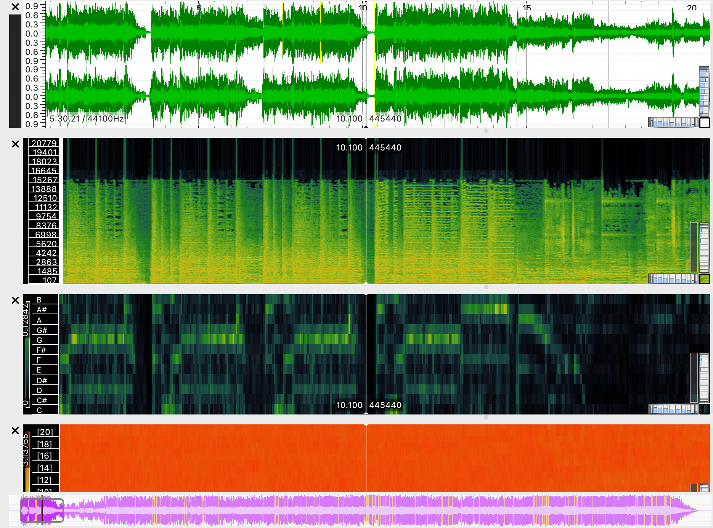

Week 9: Analysing & Extracting Data from Audio
Task 1: Extract Features
For this task, I further analysis the 3 tracks selected from Week 8.
The following images depicts:
- Waveform
- Spectrogram
- Chromagram
- MeI Frequency Cepstral Coeffients
Fade Into You by Mazzy Star

Mr. Jones by Counting Crows

Cryin' by Aerosmith
Task 2: Compute and visualize features with histograms
Using Python's Jupyter Notebook, I computed and visualized the histograms for the MFCC feature of each of my 3 tracks:
Track 1: Fade Into You

Track 2: Mr. Jones

Track 3: Cryin'

Comparison of Histograms
For this analysis, I compared the MFCC histograms for the three tracks in my theme: Fade Into You, Mr.Jones, and Cryin’. Given availability of tracks within my theme, these three are similar in that they all converge the Alternative Rock genre. As expected, Mr.Jones and Cryin’ show the strongest similarity across many of the MFCCs. Their mid-range coefficients (for example MFCCs 5-10) show nearly identical bell-shaped distributions with comparable spread and central tendency. This makes sense given that both tracks veer closer to Rock for their more intense sounds. Meanwhile, Fade Into You, is much dreamier and steers towards Pop. This is seen in MFCCs 1-3 where it has a more extreme negative range and sharper peak compared to the other tracks.